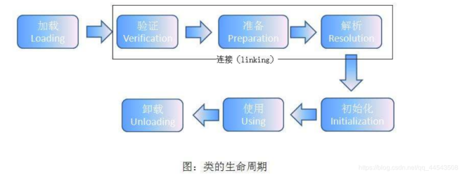
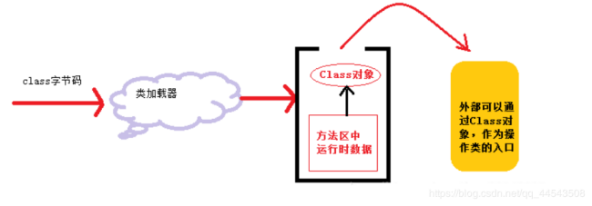
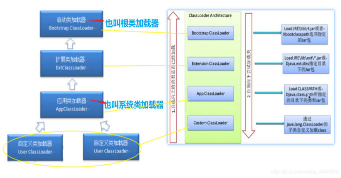
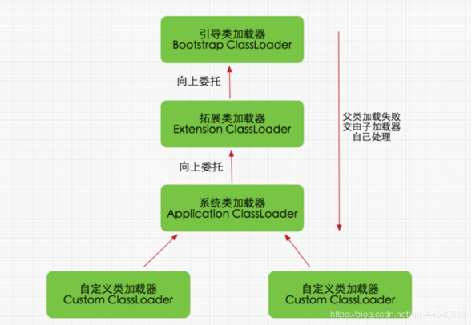
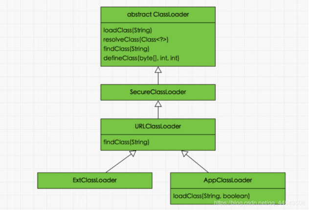
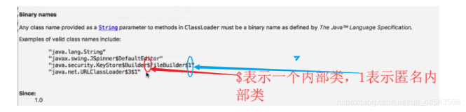

1. 前言
你是否真的理解java的类加载机制？点进文章的盆友不如先来做一道非常常见的面试题，如果你能做出来，可能你早已掌握并理解了java的类加载机制，若结果出乎你的意料，那就很有必要来了解了解java的类加载机制了。代码如下
1 | 1.package com.jvm.classloader; |
运行结果：
1 | 1. Father静态代码块 |
嗯哼？其实上面程序并不是关键，可能真的难不倒各位，不妨做下面一道面试题可好？如果下面这道面试题都做对了，那没错了，这篇文章你就不用看了，真的。
1 | 1.class YeYe{ |
运行结果：
1 | 1.YeYe静态代码块 |
是对是错已经有个数了吧，我就不拆穿各位的小心思了…
以上的面试题其实就是典型的java类的加载问题，如果你对Java加载机制不理解，那么你可能就错了上面两道题目的。这篇文章将通过对Java类加载机制的讲解，让各位熟练理解java类的加载机制。
1 | 1.package com.jvm.classloader; |
运行结果：
1 | 运行结果：HelloJVM_Father |
2.什么是类的加载（类初始化）
JVM重要的一个领域：类加载
当程序主动使用某个类时，如果该类还未被加载到内存中，则JVM会通过加载、连接、初始化3个步骤来对该类进行初始化。如果没有意外，JVM将会连续完成3个步骤，所以有时也把这个3个步骤统称为类加载或类初始化。而类加载必然涉及类加载器，下面我们先来了解一下类的加载。
类的加载（类初始化）：
在java代码中，类型的加载、连接、与初始化过程都是在程序运行期间完成的（类从磁盘加载到内存中经历的三个阶段）【牢牢记在心里】
提供了更大的灵活性，增加了更多的可能性
虽然上面的第一句话非常简短，但是蕴含的知识量却是巨大的！包含两个重要的概念：
1) 类型
定义的类、接口或者枚举称为类型而不涉及对象，在类加载的过程中，是一个创建对象之前的一些信息
2) 程序运行期间
程序运行期间完成典型例子就是动态代理，其实很多语言都是在编译期就完成了加载，也正因为这个特性给Java程序提供了更大的灵活性，增加了更多的可能性
2.1 类加载注意事项
1) 类加载器并不需要等到某个类被 “首次主动使用” 时再加载它（关于首次主动使用这个重要概念下文将讲解）
2) JVM规范允许类加载器在预料某个类将要被使用时就预先加载它
3) 如果在预先加载的过程中遇到了.class文件缺失或存在错误，类加载器必须在程序首次主动使用该类时才报告错误（LinkageError错误）如果这个类一直没有被程序主动使用，那么类加载器就不会报告错误。
3.类的生命周期

从上图可知，类从被加载到虚拟机内存开始，到卸载出内存为止，它的整个生命周期包括 7 个阶段，而验证、准备、解析 3 个阶段统称为连接。
加载、验证、准备、初始化和卸载这 5 个阶段的顺序是固定确定的，类的加载过程必须按照这种顺序开始（注意是“开始”，而不是“进行”），而解析阶段则不一定：它在某些情况下可以在初始化后再开始，这是为了支持 Java 语言的运行时绑定【也就是java的动态绑定/晚期绑定】。
3.1加载
在上面已经提到过，加载阶段是类加载的第一个阶段！类的加载过程就是从加载阶段开始~
加载阶段指的是将类的.class文件中的二进制数据读入到内存中，将其放在运行时数据区的方法区内，然后在堆区创建一个 java.lang.Class对象（JVM规范并未说明Class对象位于哪里，HotSpot虚拟机将其放在方法区中），用来封装类在方法区内的数据结构。类的加载的最终产品是位于堆区中的 Class对象， Class对象封装了类在方法区内的数据结构，并且向Java程序员提供了访问方法区内的数据结构的接口。
Class对象是存放在堆区的，不是方法区，这点很多人容易犯错。类的元数据才是存在方法区的。【元数据并不是类的Class对象。Class对象是加载的最终产品，类的方法代码，变量名，方法名，访问权限，返回值等等都是在方法区的】
JDK7创建Class实例存在堆中；因为JDK7中JavaObjectsInPerm参数值固定为false。
JDK8移除了永久代，转而使用元空间来实现方法区，创建的Class实例依旧在java heap（堆）中

编写一个新的java类时,JVM就会帮我们编译成class对象,存放在同名的.class文件中。在运行时，当需要生成这个类的对象，JVM就会检查此类是否已经装载内存中。若是没有装载，则把.class文件装入到内存中。若是装载，则根据class文件生成实例对象。
怎么理解Class对象与new出来的对象之间的关系呢？
new出来的对象以car为例。可以把car的Class类看成具体的一个人，而new car则是人物映像，具体的一个人（Class）是唯一的，人物映像（new car）是多个的。镜子中的每个人物映像都是根据具体的人映造出来的，也就是说每个new出来的对象都是以Class类为模板参照出来的！为啥可以参照捏？因为Class对象提供了访问方法区内的数据结构的接口哇，上面提及过了喔！
总结：
加载阶段简单来说就是：
.class文件（二进制数据）——>读取到内存——>元数据放进方法区——>堆中创建对应Class对象——>并提供访问方法区的接口
相对于类加载的其他阶段而言，加载阶段（准确地说，是加载阶段获取类的二进制字节流的动作）是可控性最强的阶段，因为开发人员既可以使用系统提供的类加载器来完成加载，也可以自定义自己的类加载器来完成加载。
加载阶段完成后，虚拟机外部的二进制字节流就按照虚拟机所需的格式存储在方法区之中，而且在Java堆中也创建一个 java.lang.Class类的对象，这样便可以通过该对象访问方法区中的这些数据。
加载.calss文件的方式:
类的加载由类加载器完成，类加载器通常由JVM提供，这些类加载器也是前面所有程序运行的基础，JVM提供的这些类加载器通常被称为系统类加载器。除此之外，开发者可以通过继承ClassLoader基类来创建自己的类加载器。通过使用不同的类加载器，可以从不同来源加载类的二进制数据，二进制数据通常有如下几种来源：
（1）从本地系统中直接加载
（2）通过网络下载.class文件
（3）从zip，jar等归档文件中加载.class文件
（4）从专用数据库中提取.class文件
（5）将java源文件动态编译为.class文件
3.2 验证
验证：确保被加载的类的正确性。
关于验证大可不必深入但是了解类加载机制必须要知道有这么个过程以及知道验证就是为了验证确保Class文件的字节流中包含的信息符合当前虚拟机的要求即可。
所以下面关于验证的内容作为了解即可
验证是连接阶段的第一阶段，这一阶段的目的是为了确保Class文件的字节流中包含的信息符合当前虚拟机的要求，并且不会危害虚拟机自身的安全。验证阶段大致会完成4个阶段的检验动作：
- 文件格式验证：验证字节流是否符合Class文件格式的规范；例如：是否以 0xCAFEBABE开头、主次版本号是否在当前虚拟机的处理范围之内、常量池中的常量是否有不被支持的类型。
- 元数据验证：对字节码描述的信息进行语义分析（注意：对比javac编译阶段的语义分析），以保证其描述的信息符合Java语言规范的要求；例如：这个类是否有父类，除了 java.lang.Object之外。
- 字节码验证：通过数据流和控制流分析，确定程序语义是合法的、符合逻辑的。
- 符号引用验证：确保解析动作能正确执行。
验证阶段是非常重要的，但不是必须的，它对程序运行期没有影响，如果所引用的类经过反复验证，那么可以考虑采用 -Xverifynone参数来关闭大部分的类验证措施，以缩短虚拟机类加载的时间。
3.3 准备
当完成字节码文件的校验之后，JVM 便会开始为类变量分配内存并初始化。准备阶段是正式为类变量分配内存并设置类变量初始值的阶段，这些内存都将在方法区中分配。
这里需要注意两个关键点，即\内存分配的对象**以及\初始化的类型**。
内存分配的对象：要明白首先要知道Java 中的变量有类变量以及类成员变量两种类型，类变量指的是被 static 修饰的变量，而其他所有类型的变量都属于类成员变量。在准备阶段，JVM 只会为类变量分配内存，而不会为类成员变量分配内存。类成员变量的内存分配需要等到初始化阶段才开始（初始化阶段下面会讲到）。
举个例子：例如下面的代码在准备阶段，只会为 LeiBianLiang属性分配内存，而不会为 ChenYuanBL属性分配内存。
1 | 1.public static int LeiBianLiang = 666; |
初始化的类型：在准备阶段，JVM 会为类变量分配内存，并为其初始化（JVM 只会为类变量分配内存，而不会为类成员变量分配内存，类成员变量自然这个时候也不能被初始化）。但是这里的初始化指的是为变量赋予 Java 语言中该数据类型的默认值，而不是用户代码里初始化的值。
例如下面的代码在准备阶段之后，LeiBianLiang 的值将是 0，而不是 666。
1 | 1.public static int LeiBianLiang = 666; |
但如果一个变量是常量（被 static final 修饰）的话，那么在准备阶段，属性便会被赋予用户希望的值。例如下面的代码在准备阶段之后，ChangLiang的值将是 666，而不再会是 0。
1 | 2.public static final int ChangLiang = 666; |
之所以 static final 会直接被复制，而 static 变量会被赋予java语言类型的默认值。其实我们稍微思考一下就能想明白了。
两个语句的区别是一个有 final 关键字修饰，另外一个没有。而 final 关键字在 Java 中代表不可改变的意思，意思就是说 ChangLiang的值一旦赋值就不会在改变了。既然一旦赋值就不会再改变，那么就必须一开始就给其赋予用户想要的值，因此被 final 修饰的类变量在准备阶段就会被赋予想要的值。而没有被 final 修饰的类变量，其可能在初始化阶段或者运行阶段发生变化，所以就没有必要在准备阶段对它赋予用户想要的值。
3.4 解析
当通过准备阶段之后，进入解析阶段。解析阶段是虚拟机将常量池内的符号引用替换为直接引用的过程，解析动作主要针对类或接口、字段、类方法、接口方法、方法类型、方法句柄和调用点限定符7类符号引用进行。符号引用就是一组符号来描述目标，可以是任何字面量。
直接引用就是直接指向目标的指针、相对偏移量或一个间接定位到目标的句柄。
其实这个阶段对于我们来说也是几乎透明的，了解一下就好。
3.5 初始化
到了初始化阶段，用户定义的 Java 程序代码才真正开始执行。
Java程序对类的使用方式可分为两种:主动使用与被动使用。一般来说只有当对类的首次主动使用的时候才会导致类的初始化，所以主动使用又叫做类加载过程中“初始化”开始的时机。那啥是主动使用呢？类的主动使用包括以下六种【超级重点】：
1) 创建类的实例，也就是new的方式
2) 访问某个类或接口的静态变量，或者对该静态变量赋值（凡是被final修饰不不不其实更准确的说是在编译器把结果放入常量池的静态字段除外）
3) 调用类的静态方法
4) 反射（如 Class.forName(“com.gx.yichun”)）
5) 初始化某个类的子类，则其父类也会被初始化
6) Java虚拟机启动时被标明为启动类的类（ JavaTest ），还有就是Main方法的类会首先被初始化
最后注意一点对于静态字段，只有直接定义这个字段的类才会被初始化（执行静态代码块），这句话在继承、多态中最为明显！为了方便理解下文会陆续通过例子讲解
3.6 使用
当 JVM 完成初始化阶段之后，JVM 便开始从入口方法开始执行用户的程序代码。这个使用阶段也只是了解一下就可以了。
3.7 卸载
当用户程序代码执行完毕后，JVM 便开始销毁创建的 Class 对象，最后负责运行的 JVM 也退出内存。这个卸载阶段也只是了解一下就可以了。
3.8 结束生命周期
在如下几种情况下，Java虚拟机将结束生命周期
1) 执行了 System.exit()方法
2) 程序正常执行结束
3) 程序在执行过程中遇到了异常或错误而异常终止
4) 由于操作系统出现错误而导致Java虚拟机进程终止
4 接口的加载过程
接口加载过程与类加载过程稍有不同。
当一个类在初始化时，要求其父类全部都已经初始化过了，但是一个接口在初始化时，并不要求其父接口全部都完成了初始化，当真正用到父接口的时候才会初始化。
5 解开开篇面试题
1 | 1.class Father2{ |
再回头看这个题，这也太简单了吧，由于Son2.strSon是调用了Son类自己的静态方法属于主动使用，所以会初始化Son类，又由于继承关系，类继承原则是初始化一个子类，会先去初始化其父类，所以会先去初始化父类！
1 | 1.class YeYe{ |
注意子类Son类没有被初始化
首先看到Son.strFather，你会发现是子类Son访问父类Father的静态变量strFather，这个时候就千万要记住我在归纳主动使用概念时特别提到过的一个注意点了：对于静态字段，只有直接定义这个字段的类才会被初始化（执行静态代码块），这句话在继承、多态中最为明显！
嗯哼，对吧，Son.strFather中的静态字段是属于父类Father的对吧，也就是说直接定义这个字段的类是父类Father，所以在执行 System.out.println(Son.strFather); 这句代码的时候会去初始化Father类而不是子类Son！是不是一下子明白了？
1 | 1.class YeYe{ |
这个题唯一的特点就在于final static ！是的Son.strFather所对应的变量便是final static修饰的，依旧是在本篇文章中归纳的类的主动使用范畴第二点当中：访问某个类或接口的静态变量，或者对该静态变量赋值（凡是被final修饰不不不其实更准确的说是在编译器把结果放入常量池的静态字段除外）
所以，这个题并不会初始化任何类，当然除了Main方法所在的类！于是仅仅执行了System.out.println(Son.strFather);所以仅仅打印了Son.strFather的字段结果HelloJVM_Father，嗯哼，是不是又突然明白了？
实际上上面的题目并不能完全说明本篇文章中归纳的类的主动使用范畴第二点！这话怎么说呢？怎么理解呢？再来一个程序各位就更加明了了
1 | 1.class Test{ |
上面这个程序完全说明本篇文章中归纳的类的主动使用范畴第二点当中的这句话：凡是被final修饰不不不其实更准确的说是在编译器把结果放入常量池的静态字段除外！
分析：其实final不是重点，重点是编译器把结果放入常量池！当一个常量的值并非编译期可以确定的，那么这个值就不会被放到调用类的常量池中，这时在程序运行时，会导致主动使用这个常量所在的类，所以这个类会被初始化
单纯的想巅覆各位对java代码的认知，当然还望大佬轻拍哈哈哈，直接上代码：
1 | 1.public class ClassAndObjectLnitialize { |
建议这个题不要花太多时间思考，否则看了结果你会发现自己想太多了，导致最后可能你看到结果想砸电脑哈哈哈
1 | 1.运行结果 |
下面我们来简单分析一下，首先根据上面说到的触发初始化的（主动使用）的第六点：Java虚拟机启动时被标明为启动类的类（ JavaTest ），还有就是Main方法的类会首先被初始化
嗯哼？小白童鞋就有疑问了：不是说好有Main方法的类会被初始化的么？那怎么好多东西都没有执行捏？
那么类的初始化顺序到底是怎么样的呢？在我们代码中，我们只知道有一个构造方法，但实际上Java代码编译成字节码之后，最开始是没有构造方法的概念的，只有类初始化方法 和 对象初始化方法 。
这个时候我们就不得不深入理解了！那么这两个方法是怎么来的呢？
- 类初始化方法：编译器会按照其出现顺序，收集：类变量（static变量）的赋值语句、静态代码块，最终组成类初始化方法。类初始化方法一般在类初始化的时候执行。
所以，上面的这个例子，类初始化方法就会执行下面这段代码了：
1 | 1.static int QingShang = 666; //类变量（static变量）的赋值语句 |
- 对象初始化方法：编译器会按照其出现顺序，收集：成员变量的赋值语句、普通代码块，最后收集构造函数的代码，最终组成对象初始化方法，值得特别注意的是，如果没有监测或者收集到构造函数的代码，则将不会执行对象初始化方法。对象初始化方法一般在实例化类对象的时候执行。
以上面这个例子，其对象初始化方法就是下面这段代码了：
1 | 1.{ |
明白了类初始化方法 和 对象初始化方法 之后，我们再来看这个上面例子！是的！正如上面提到的：如果没有监测或者收集到构造函数的代码，则将不会执行对象初始化方法。上面的这个例子确实没有执行对象初始化方法。忘了吗？我们根本就没有对类ClassAndObjectLnitialize 进行实例化！只是单纯的写了一个输出语句。如果我们给其实例化，验证一下，代码如下：
1 | 1.public class ClassAndObjectLnitialize { |
5. 理解首次主动使用
我在上面提到过Java程序对类的使用方式可分为两种:主动使用与被动使用。一般来说只有当对类的首次主动使用的时候才会导致类的初始化，其中首次关键字很重要，因此特地用一小结将其讲解！怎么理解呢？老规矩看个题：
1 | 1.class Father6{ |
运行结果
1 | 2. Main方法静态代码块 |
分析：
首先根据主动使用概括的第六点：Main方法的类会首先被初始化。 所以最先执行Main方法静态代码块，而 Father6 father6;只是声明了一个引用不会执行什么，当运行到father6=new Father6();的时候，看到关键字new并且将引用father6指向了Father6对象，说明主动使用了，所以父类Father6将被初始化，因此打印了：父类粑粑静态代码块 ，之后执行 System.out.println(Father6.a);属于访问静态变量所以也是主动使用，这个时候注意了，因为在上面执行father6=new Father6();的时候父类已经主动使用并且初始化过一次了，这次不再是首次主动使用了，所以Father6不会在被初始化，自然它的静态代码块就不再执行了，所以直接打印静态变量值1，而后面的System.out.println(Son6.b);同样，也是只初始化自己，不会去初始化父类，只因为父类Father6以及不再是首次主动使用了！
6. 类加载器
类加载器负责加载所有的类，其为所有被载入内存中的类生成一个java.lang.Class实例对象。一旦一个类被加载入JVM中，同一个类就不会被再次载入了。正如一个对象有一个唯一的标识一样，一个载入JVM的类也有一个唯一的标识。
关于唯一标识符：
在Java中，一个类用其全限定类名（包括包名和类名）作为标识；但在JVM中，一个类用其全限定类名和其类加载器作为其唯一标识。
类加载器的任务是根据一个类的全限定名来读取此类的二进制字节流到JVM中，然后转换为一个与目标类对应的java.lang.Class对象实例，在虚拟机提供了3种类加载器，启动（Bootstrap）类加载器、扩展（Extension）类加载器、系统（System）类加载器（也称应用类加载器），如下：

站在Java开发人员的角度来看，类加载器可以大致划分为以下三类：
- 启动类加载器： BootstrapClassLoader，启动类加载器主要加载的是JVM自身需要的类，这个类加载使用C++语言实现的，是虚拟机自身的一部分，负责加载存放在 JDK\jre\lib(JDK代表JDK的安装目录，下同)下，或被 -Xbootclasspath参数指定的路径中的，并且能被虚拟机识别的类库（如rt.jar，所有的java.开头的类均被 BootstrapClassLoader加载）。启动类加载器是无法被Java程序直接引用的。总结一句话：启动类加载器加载java运行过程中的核心类库JRE\lib\rt.jar, sunrsasign.jar, charsets.jar, jce.jar, jsse.jar, plugin.jar 以及存放在JRE\classes里的类，也就是JDK提供的类等常见的比如：Object、Stirng、List…
- 扩展类加载器： ExtensionClassLoader，该加载器由 sun.misc.Launcher$ExtClassLoader实现，它负责加载 JDK\jre\lib\ext目录中，或者由 java.ext.dirs系统变量指定的路径中的所有类库（如javax.开头的类），开发者可以直接使用扩展类加载器。
- 应用程序类加载器： ApplicationClassLoader，该类加载器由 sun.misc.Launcher$AppClassLoader来实现，它负责加载用户类路径（ClassPath）所指定的类，开发者可以直接使用该类加载器，如果应用程序中没有自定义过自己的类加载器，一般情况下这个就是程序中默认的类加载器。总结一句话：应用程序类加载器加载CLASSPATH变量指定路径下的类 即指你自已在项目工程中编写的类
- 线程上下文类加载器：除了以上列举的三种类加载器，其实还有一种比较特殊的类型就是线程上下文类加载器。类似Thread.currentThread().getContextClassLoader()获取线程上下文类加载器，线程上下文加载器其实很重要，它违背（破坏）双亲委派模型，很好地打破了双亲委派模型的局限性，尽管我们在开发中很少用到，但是框架组件开发绝对要频繁使用到线程上下文类加载器，如Tomcat等等…
在Java的日常应用程序开发中，类的加载几乎是由上述3种类加载器相互配合执行的，在必要时，我们还可以自定义类加载器，因为JVM自带的类加载器（ClassLoader）只是懂得从本地文件系统加载标准的java class文件，因此如果编写了自己的ClassLoader，便可以做到如下几点：
1、在执行非置信代码之前，自动验证数字签名。
2、动态地创建符合用户特定需要的定制化构建类。
3、从特定的场所取得java class，例如数据库中和网络中。
需要注意的是，Java虚拟机对class文件采用的是按需加载的方式，也就是说当需要使用该类时才会将它的class文件加载到内存生成class对象，而且加载某个类的class文件时，Java虚拟机默认采用的是双亲委派模式即把请求交由父类处理，它一种任务委派模式，下面将会详细讲到！
下面我们看一个程序：
1 | public class ClassloaderTest { |
运行结果：
1 | sun.misc.Launcher$AppClassLoader@18b4aac2 |
从上面的结果可以看出，并没有获取到ExtClassLoader的父加载器（Loader），原因是Bootstrap Loader（启动类加载器）是用C++语言实现的（这里仅限于Hotspot，也就是JDK1.5之后默认的虚拟机，有很多其他的虚拟机是用Java语言实现的），找不到一个确定的返回父Loader的方式，于是就返回null。至于$符号就是内部类的含义。
7.java虚拟机入口应用：sun.misc.Launcher
到这里，我为什么要讲Launcher呢？如果你没有接触过这个Launcher类可能你会特别陌生，但是它却特别重要！为啥说它重要呢，不知道你有没有想过为啥类加载器首先会去到应用程序类加载器 ApplicationClassLoader，是的！我在介绍应用程序类加载器 ApplicationClassLoader和扩展类加载器 ExtensionClassLoader的时候就已经提到过这两个类加载器是由sun.misc.Launcher实现的！为了更好的理解，我们可以查看Launcher源码：
1 | 1.public class Launcher { |
通过以上源码我们可以得到相关的信息：
- Launcher初始化了ExtClassLoader和AppClassLoader，首先是创建了Extcl扩展类加载器
- 之后的App应用类【系统类】加载器作为Launcher中的一个成员变量，至于为啥不把Extcl扩展类加载器也做为成员变量的原因，大家可以仔细想一想，是为啥呢？其实很简单，因为没必要，因为直接把App系统加载器.parent()方法即可得到Extcl扩展类加载器！
- Launcher中并没有看见BootstrapClassLoader，但通过System.getProperty(“sun.boot.class.path”)得到了字符串bootClassPath,这个应该就是BootstrapClassLoader加载的jar包路径。我们可以用输出语句代码测试一下sun.boot.class.path是什么内容，其实就是JRE目录下的jar包或者是class文件。
1 | 1.System.out.println(System.getProperty("sun.boot.class.path")); |
得到的结果是：
1 | 1.C:\Program Files\Java\jre1.8.0_91\lib\resources.jar; |
8. ExtClassLoader、AppClassLoader源码
8.1ExtClassLoader源码
1 | 1./* |
当然我们可以指定-D java.ext.dirs参数来添加和改变ExtClassLoader的加载路径
8.2AppClassLoader源码
1 | 1.static class AppClassLoader extends URLClassLoader { |
从源码中可以看到AppClassLoader加载的就是java.class.path下的路径
8.3 小结
从上面源码也可以看出，父加载器并不是指其父类，ExtClassLoader和AppClassLoader同样继承自URLClassLoader，这个时候小白童鞋就不耐烦了：那为啥调用AppClassLoader.getParent()方法会得到ExtClassLoader的实例呢？实际上URLClassLoader的源码中也并没有getParent()方法。这个方法在ClassLoader中，源码如下：
1 | 1.public abstract class ClassLoader { |
从上面的源码可以看到getParent()实际上返回的就是一个ClassLoader对象parent，parent的赋值是在ClassLoader对象的构造方法中，它有两个情况：
1、由外部类创建ClassLoader时直接指定一个ClassLoader为parent。
2、由getSystemClassLoader()方法生成，也就是在sun.misc.Laucher通过getClassLoader()获取，也就是AppClassLoader。简单的说，就是一个ClassLoader创建时如果没有指定parent，那么它的parent默认就是AppClassLoader。
9. 关于命名空间
命名空间概念：每个类加载器都有自己的命名空间，命名空间由该加载器及所有父加载器所加载的类组成。
特别注意：
在同一个命名空间中，不会出现类的完整名字（包括类的包名）相同的两个类。
在不同的命名空间中，有可能会出现类的完整名字（包括类的包名）相同的两个类。
由子加载器加载的类能看见父加载器的类，由父亲加载器加载的类不能看见子加载器加载的类
我们已经知道每个类只能被加载一次，其实这样说是不够准确的，怎样才算是准确的呢？那就涉及到命名空间的概念了！只有在相同的命名空间中，每个类才只能被加载一次，反过来说就是一个类在不同的命名空间中是可以被加载多次的，而被加载多次的Class对象是互相独立的！
9.1 如何理解
出写例子让各位深刻体会一下！当然这些例子涉及自定义加载器的一些知识，建议先对自定义加载器有一定了解在看！
例子必知前提：
1、 自己在idea或者eclipse中创建的工程项目中只要编译之后都会有对应的class文件成在classPath目录中
2、而这些目录是由ApplicationClassLoader应用加载器加载
3、 我之后会将class文件放到系统桌面地址上，而这些系统地址由自定义加载器指定，所以由自定义加载器加载
9.2 准备
事先编译好，然后将项目工程中的两个字节码class文件【File1和File2】拷贝到系统桌面路径上，编译main方法就会出现在项目工程（ClassPath）下，注意以下例子情况中系统桌面路径的class文件一直都存在！
- Main方法情况：
- 创建一个自定义加载器classloader2，并声明桌面class文件路径，接着加载File1
- 打印File1的加载器
- newInstance出File1的实例
- File1类的方法情况：
- File1的构造方法中存在一行代码：new File2 的new实例代码
- File2类的方法情况：
- 打印File2的加载器
9.3测试代码情景一
删除File1、File2项目工程中的class文件，工程项目的两个class文件都删除（只存在系统桌面路径下的class文件）
结果：File1和File2的加载器都是自定义加载器
9.4 测试代码情景二
只删除File1项目工程中的class文件
结果：File1的加载器是自定义加载器，而执行到File2实例的加载器是App应用加载器
9.5 测试代码情景三
只删除File2项目工程中的class文件
结果：File1的加载器都是APP应用加载器，而执行到File2实例的时候报NoClassDefFoundError异常
\得出结论：**加载一个类（File1）的时候，这个类里面调用了其他的类（File2）或者其他类方法的初始化代码，那么这里面的类也会试着从这个类的加载器开始向上委托加载，如果全都加载不了加载不了就报NoClassDefFoundError异常。
当然这样理解命名空间和类加载机制还是远远不够的！
^^修改条件：File2类中发生改变情况如下：
- File1的构造方法中存在一行new File2的实例这没变
- 在File2的构造方法中，打印（访问）File1的class文件
9.6 测试代码情景四
只删除项目工程中File1的class文件
结果：File1的加载器都是自定义加载器，而执行到File2实例的加载器是App应用加载器，当运行到File2构造方法中的打印（访问）File1的class文件的时候报NoClassDefFoundError异常
\得出结论：******父亲加载器加载的类（File2）不能看见子加载器加载的类（****File1****）****
^^修改条件：File1方法发生改变情况如下：
1、Main方法中newInstance出File1的实例，File1的构造方法中存在一行new File2的实例这都没变
2、在File1的构造方法中，打印File2的class文件
9.7测试代码情景五
只删除File1项目工程中的class文件
结果：File1的加载器都是自定义加载器，而执行到File2实例的加载器是App应用加载器，当运行到File1构造方法中的打印File2的class文件的时候没问题
\得出结论：由子加载器加载的类（File1）能看见父加载器的类（File2）**
\当然还要注意知道的一点的是：******如果两个加载器之间没有直接或间接的父子关系，那么它们各自加载类相互不可见。****
10. JVM类加载机制
JVM的类加载机制主要有如下3种。
- 全盘负责：当一个类加载器负责加载某个Class时，该Class所依赖的和引用的其他Class也将由该类加载器负责载入，除非显示使用另外一个类加载器来载入
- 父类委托：先让父类加载器试图加载该类，只有在父类加载器无法加载该类时才尝试从自己的类路径中加载该类，通俗讲就是儿子们都他么是懒猪，自己不管能不能做，就算能加载也先不干，先给自己的父亲做，一个一个往上抛，直到抛到启动类加载器也就是最顶级父类，只有父亲做不了的时候再没办法由下一个子类做，直到能某一个子类能做才做，之后的子类就直接返回，实力坑爹！
- 缓存机制：缓存机制将会保证所有加载过的Class都会被缓存，当程序中需要使用某个Class时，类加载器先从缓存区寻找该Class，只有缓存区不存在，系统才会读取该类对应的二进制数据，并将其转换成Class对象，存入缓存区。这就是为什么修改了Class后，必须重启JVM，程序的修改才会生效
11. 双亲委派模型
双亲委派模型的工作流程是：如果一个类加载器收到了类加载的请求，它首先不会自己去尝试加载这个类，而是把请求委托给父加载器去完成，依次向上，因此，所有的类加载请求最终都应该被传递到顶层的启动类加载器中，只有当父加载器在它的搜索范围中没有找到所需的类时，即无法完成该加载，子加载器才会尝试自己去加载该类。也就是实力坑爹！
双亲委派机制:
- 当AppClassLoader加载一个class时，它首先不会自己去尝试加载这个类，而是把类加载请求委派给父类加载器ExtClassLoader去完成。
- 当 ExtClassLoader加载一个class时，它首先也不会自己去尝试加载这个类，而是把类加载请求委派给BootStrapClassLoader去完成。
- 如果 BootStrapClassLoader加载失败（例如在 $JAVA_HOME/jre/lib里未查找到该class），会使用 ExtClassLoader来尝试加载；
- 若ExtClassLoader也加载失败，则会使用 AppClassLoader来加载，如果 AppClassLoader也加载失败，则会报出异常 ClassNotFoundException。

从代码层面了解几个Java中定义的类加载器及其双亲委派模式的实现，它们类图关系如下：

从图可以看出顶层的类加载器是抽象类ClassLoader类，其后所有的类加载器都继承自ClassLoader（不包括启动类加载器），为了更好理解双亲委派模型，ClassLoader源码中的loadClass(String)方法该方法加载指定名称（包括包名）的二进制类型，该方法在JDK1.2之后不再建议用户重写但用户可以直接调用该方法，loadClass()方法是ClassLoader类自己实现的，该方法中的逻辑就是双亲委派模式的实现，loadClass(String name, boolean resolve)是一个重载方法，resolve参数代表是否生成class对象的同时进行解析相关操作。源码分析如下：
1 | 1.public Class<?> loadClass(String name) throws ClassNotFoundException { |
双亲委派模型的意义主要是：Java类随着它的类加载器一起具备了一种带有优先级的层次关系，通过这种层级关可以避免类的重复加载，当父亲已经加载了该类时，就没有必要子ClassLoader再加载一次。其次是考虑到安全因素，java核心api中定义类型不会被随意替换，假设通过网络传递一个名为java.lang.Integer的类，通过双亲委托模式传递到启动类加载器，而启动类加载器在核心Java API发现这个名字的类，发现该类已被加载，并不会重新加载网络传递的过来的java.lang.Integer，而直接返回已加载过的Integer.class，这样便可以防止核心API库被随意篡改。
双亲委派模型意义总结来讲就是：
1、系统类防止内存中出现多份同样的字节码
2、保证Java程序安全稳定运行
12.ClassLoader源码分析
ClassLoader类是一个抽象类，所有的类加载器都继承自ClassLoader（不包括启动类加载器），因此它显得格外重要，分析ClassLoader抽象类也是非常重要的！
简单小结一下ClassLoader抽象类中一些概念：
二进制概念（Binary name）：格式如下

把二进制名字转换成文件名字，然后在文件系统中磁盘上读取其二进制文件（class文件），每一个class对象都包含了定义了这个类的classload对象，class类都是由类加载器加载的只有数组类型是由JVM根据需要动态生成。
特别注意数组类型：
数组类的类对象不是由类加载器创建的，而是根据Java运行时的需要自动创建的。
数组类的类加载器getClassLoader()与它的元素类型的类加载器相同;如果元素类型是基本类型，则数组类没有类加载器也就是null，而这个null不同于根类加载器返回的null，它是单纯的null。
到这里，下面就主要分析ClassLoader抽象类中几个比较重要的方法。
12.1 loadClass
该方法加载指定名称（包括包名）的二进制类型，该方法在JDK1.2之后不再建议用户重写但用户可以直接调用该方法，loadClass()方法是ClassLoader类自己实现的，该方法中的逻辑就是双亲委派模式的实现，其源码如下，loadClass(String name, boolean resolve)是一个重载方法，resolve参数代表是否生成class对象的同时进行解析相关操作：
1 | public Class<?> loadClass(String name) throws ClassNotFoundException { |
正如loadClass方法所展示的，当类加载请求到来时，先从缓存中查找该类对象，如果存在直接返回，如果不存在则交给该类加载去的父加载器去加载，倘若没有父加载则交给顶级启动类加载器去加载，最后倘若仍没有找到，则使用findClass()方法去加载（关于findClass()稍后会进一步介绍）。从loadClass实现也可以知道如果不想重新定义加载类的规则，也没有复杂的逻辑，只想在运行时加载自己指定的类，那么我们可以直接使用this.getClass().getClassLoder.loadClass(“className”)，这样就可以直接调用ClassLoader的loadClass方法获取到class对象。
12.2 findClass
在JDK1.2之前，在自定义类加载时，总会去继承ClassLoader类并重写loadClass方法，从而实现自定义的类加载类，但是在JDK1.2之后已不再建议用户去覆盖loadClass()方法，而是建议把自定义的类加载逻辑写在findClass()方法中，从前面的分析可知，findClass()方法是在loadClass()方法中被调用的，当loadClass()方法中父加载器加载失败后，则会调用自己的findClass()方法来完成类加载，这样就可以保证自定义的类加载器也符合双亲委托模式。需要注意的是ClassLoader类中并没有实现findClass()方法的具体代码逻辑，取而代之的是抛出ClassNotFoundException异常，同时应该知道的是findClass方法通常是和defineClass方法一起使用的(稍后会分析)，ClassLoader类中findClass()方法源码如下：
1 | 1.//直接抛出异常 |
12.3 defineClass(byte[] b, int off, int len)
defineClass()方法是用来将byte字节流解析成JVM能够识别的Class对象(ClassLoader中已实现该方法逻辑)，通过这个方法不仅能够通过class文件实例化class对象，也可以通过其他方式实例化class对象，如通过网络接收一个类的字节码，然后转换为byte字节流创建对应的Class对象，defineClass()方法通常与findClass()方法一起使用，一般情况下，在自定义类加载器时，会直接覆盖ClassLoader的findClass()方法并编写加载规则，取得要加载类的字节码后转换成流，然后调用defineClass()方法生成类的Class对象，简单例子如下：
1 | 1.protected Class<?> findClass(String name) throws ClassNotFoundException { |
需要注意的是，如果直接调用defineClass()方法生成类的Class对象，这个类的Class对象并没有解析(也可以理解为链接阶段，毕竟解析是链接的最后一步)，其解析操作需要等待初始化阶段进行。
12.4resolveClass (Class<?>c)
使用该方法可以使用类的Class对象创建完成也同时被解析。前面我们说链接阶段主要是对字节码进行验证，为类变量分配内存并设置初始值同时将字节码文件中的符号引用转换为直接引用。
12.5 ClassLoader小结
以上上述4个方法是ClassLoader类中的比较重要的方法，也是我们可能会经常用到的方法。接看SercureClassLoader扩展了 ClassLoader，新增了几个与使用相关的代码源(对代码源的位置及其证书的验证)和权限定义类验证(主要指对class源码的访问权限)的方法，一般我们不会直接跟这个类打交道，更多是与它的子类URLClassLoader有所关联，前面说过，ClassLoader是一个抽象类，很多方法是空的没有实现，比如 findClass()、findResource()等。而URLClassLoader这个实现类为这些方法提供了具体的实现，并新增了URLClassPath类协助取得Class字节码流等功能，在编写自定义类加载器时，如果没有太过于复杂的需求，可以直接继承URLClassLoader类，这样就可以避免自己去编写findClass()方法及其获取字节码流的方式，使自定义类加载器编写更加简洁。
检查完父类加载器之后loadClass会去默认调用findClass方法，父类（ClassLoader）中的findClass方法主要是抛出一个异常。
findClass根据二进制名字找到对应的class文件，返回值为Class对象Class<?>
defineClass这个方法主要是将一个字节数组转换成Class实例，会抛三个异常，但只是threws一个，因为其他两个是运行时异常。
loadClass方法是一个加载一个指定名字的class文件，调用findLoadedClass (String)检查类是否已经加载…如果已经加装就不再加载而是直接返回第一次加载结果 所以一个类只会加载一次
13 自定义类加载器
自定义核心目的是扩展java虚拟机的动态加载类的机制，JVM默认情况是使用双亲委托机制，虽然双亲委托机制很安全极高但是有些情况我们需要自己的一种方式加载，比如应用是通过网络来传输 Java类的字节码，为保证安全性，这些字节码经过了加密处理，这时系统类加载器就无法对其进行加载，这样则需要自定义类加载器来实现。因此自定义类加载器也是很有必要的。
自定义类加载器一般都是继承自 ClassLoader类，从上面对 loadClass方法来分析来看，我们只需要重写 findClass 方法即可。自定义加载器中点：重写findClass，下面直接看自定义类加载器代码的流程：
1 | public class MyClassLoader extends ClassLoader { |
自定义类加载器的核心在于对字节码文件的获取，如果是加密的字节码则需要在该类中对文件进行解密。上面代码程序只是简单Demo，并未对class文件进行加密，因此省略了解密的过程。这里有几点需要注意：
- 这里传递的文件名需要是类的全限定性名称，即com.yichun.test.classloading.Test格式的，因为defineClass 方法是按这种格式进行处理的。
- 最好不要重写loadClass方法，因为这样容易破坏双亲委托模式。
- 这类Test 类本身可以被 AppClassLoader类加载，因此我们不能把com/yichun/test/classloading/Test.class放在类路径下。否则，由于双亲委托机制的存在，会直接导致该类由AppClassLoader加载，而不会通过我们自定义类加载器来加载。
14. 加载类的三种方式
到这里，相信大家已经对类的加载以及加载器有一定的了解了，那么你知道吗，其实加载类常见的有三种方式，如下：
- 静态加载，也就是通过new关键字来创建实例对象。
- 动态加载，也就是通过Class.forName()方法动态加载（反射加载类型），然后调用类的newInstance()方法实例化对象。
- 动态加载，通过类加载器的loadClass()方法来加载类，然后调用类的newInstance()方法实例化对象
14.1 三种方式的区别
- 第一种和第二种方式使用的类加载器是相同的，都是当前类加载器。（this.getClass.getClassLoader）。而3由用户指定类加载器。
- 如果需要在当前类路径以外寻找类，则只能采用第3种方式。第3种方式加载的类与当前类分属不同的命名空间。
- 第一种是静态加载，而第二、三种是动态加载。
14.2 两种异常
- 1静态加载的时候如果在运行环境中找不到要初始化的类,抛出的是NoClassDefFoundError,它在JAVA的异常体系中是一个Error
- 动态态加载的时候如果在运行环境中找不到要初始化的类,抛出的是ClassNotFoundException,它在JAVA的异常体系中是一个checked异常
14.3理解Class.forName
Class.forName()是一种获取Class对象的方法，而且是静态方法。
Class.forName()是一个静态方法，同样可以用来加载类，Class.forName()返回与给定的字符串名称相关联类或接口的Class对象。注意这是一种获取Class对象的方法
官方给出的API文档如下
1 | publicstatic Class<?> forName(String className) |
可以看出，Class.forName(className)实际上是调用Class.forName(className,true, this.getClass().getClassLoader())。第二个参数，是指Class被loading后是不是必须被初始化。可以看出，使用Class.forName（className）加载类时则已初始化。所以Class.forName()方法可以简单的理解为：获得字符串参数中指定的类，并初始化该类。
这个时候，我们再来看一个程序：‘
1 | package com.jvm.classloader; |
15. 总结
15.1 类的加载、连接与初始化
1、加载：查找并加载类的二进制数据到java虚拟机中
2、 连接：
- (1) 验证： 确保被加载的类的正确性
- (2) 准备：为类的静态变量分配内存，并将其初始化为默认值，但是到达初始化之前类变量都没有初始化为真正的初始值（如果是被 final 修饰的类变量，则直接会被初始成用户想要的值。）
- (3) 解析：把类中的符号引用转换为直接引用，就是在类型的常量池中寻找类、接口、字段和方法的符号引用，把这些符号引用替换成直接引用的过程
3、 初始化：为类的静态变量赋予正确的初始值
类从磁盘上加载到内存中要经历五个阶段：加载、连接、初始化、使用、卸载
15.2 Java程序对类的使用方式可分为两种
主动使用、被动使用
所有的Java虚拟机实现必须在每个类或接口被Java程序“首次主动使用”时才能初始化他们
\主动使用**
(1) 创建类的实例
(2) 访问某个类或接口的静态变量 getstatic（助记符），或者对该静态变量赋值 putstatic
(3) 调用类的静态方法 invokestatic
(4) 反射（Class.forName(“com.test.Test”)）
(5) 初始化一个类的子类
(6) Java虚拟机启动时被标明启动类的类以及包含Main方法的类
(7) JDK1.7开始提供的动态语言支持（了解）
\被动使用**
除了上面七种情况外，其他使用java类的方式都被看做是对类的被动使用，都不会导致类的初始化
16. 特别注意
初始化入口方法。当进入类加载的初始化阶段后，JVM 会寻找整个 main 方法入口，从而初始化 main 方法所在的整个类。当需要对一个类进行初始化时，会首先初始化类构造器（），之后初始化对象构造器（）。
初始化类构造器：JVM 会按顺序收集类变量的赋值语句、静态代码块，最终组成类构造器由 JVM 执行。
初始化对象构造器：JVM 会按照收集成员变量的赋值语句、普通代码块，最后收集构造方法，将它们组成对象构造器，最终由 JVM 执行。值得特别注意的是，如果没有监测或者收集到构造函数的代码，则将不会执行对象初始化方法。对象初始化方法一般在实例化类对象的时候执行。
如果在初始化 main 方法所在类的时候遇到了其他类的初始化，那么就先加载对应的类，加载完成之后返回。如此反复循环，最终返回 main 方法所在类。